GAE换新版之后一直没有更新所以一直没法翻墙，今天去goagent看了一下，发现竟然已经更新到2.1.13版本了，试了一下，可以上翻墙了。。。久违的YouTube,我回来了。。。回到原题，话说，好东西就要大家一起分享，所以吧翻墙的教程放出来吧。。。由于我是Linux用户，所以这次windows的图片只能从别人那里拿来咯，请多见谅啊。。。Linux的翻墙方法也差不多，下次我截一下图，重新发一篇。。。
翻墙前的准备，浏览器是google chrome(其他浏览器没试过，据说firefox也可以)，还有chrome的插件Proxy Switchy
首先给chrome安装好插件后，导入配置信息（点这里下载），然后保存。把Chrome的SwitchySharp设置为自动切换模式。
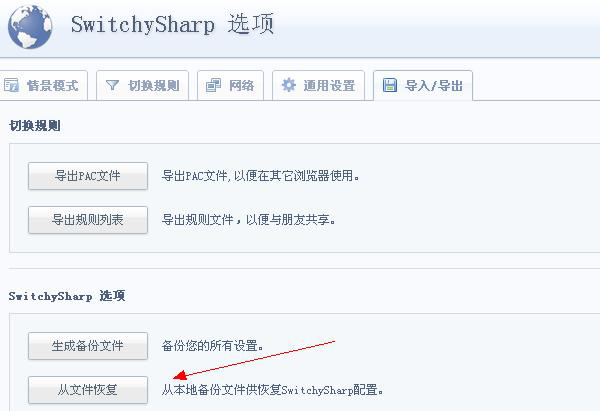 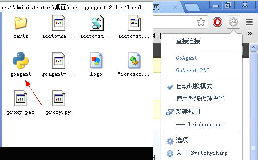接下来，需要用到gmail的邮箱，没有的话就申请一个吧，挺有用的其实。
注册了邮箱后，登陆Google App Engine，这个过程需要用到你的手机号码接收验证代码。
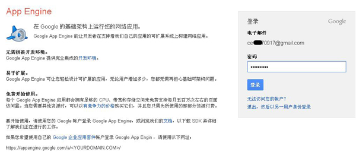 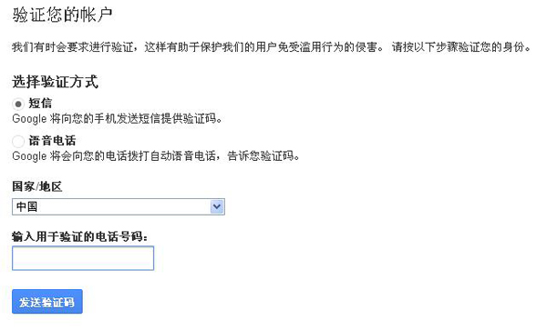申请“appid”,因为嫌麻烦，我全部都填写了同样的名字。
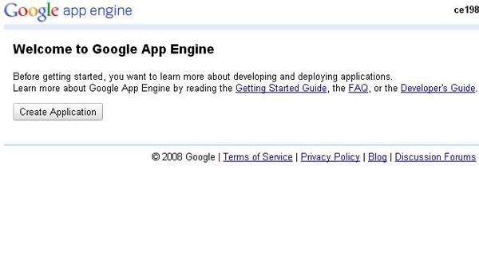 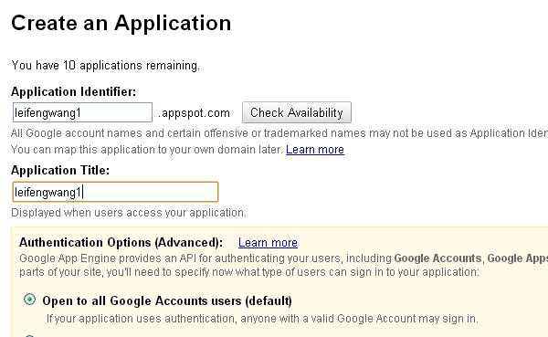这图的主人比较强，申请了这么多appid。。。我就一个，从一年前用到现在。。。
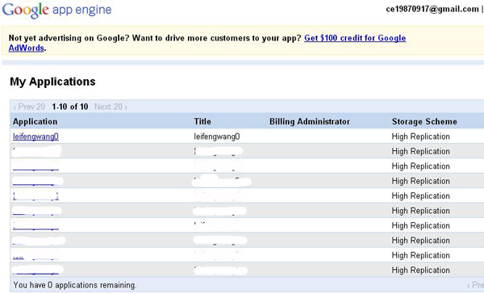接下来打开GoAgent目录，找到\local\proxy.ini文件，将[gae]下的appid后面的名字替换成你所申请到的“appid”。如果你申请了多个，请用“|”分开，如图所示。
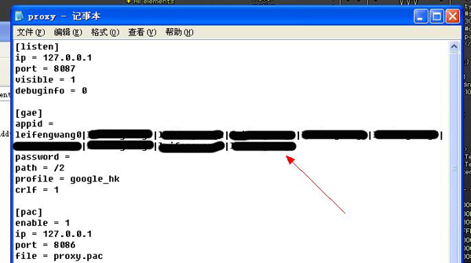打开目录下\server\upload.bat文件，分别按照提示输入“appid”、Gmail邮箱和密码。如果有多个“appid”可以“|”分开。
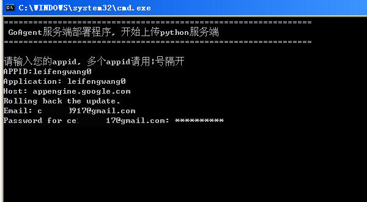 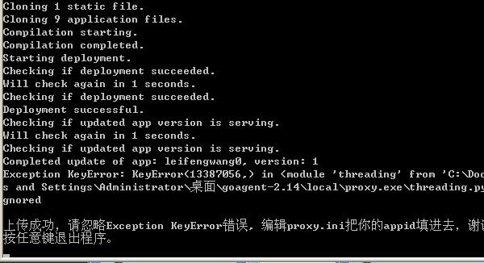最后一步，找到\server\python\app.yaml，把所有“appid”填写到application栏目下，用“|”间隔开。
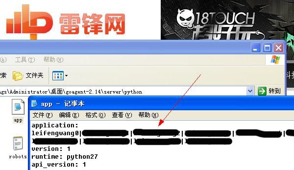完成以上步骤后，双击local文件夹里的gogent.exe，(*^__^*) 嘻嘻……欢迎来到真实的世界。。。facebook、youtube神马的都可以上啦。。。
对了，还有一个，开机自动启动，local文件夹里面有两个叫addto-startup的文件，一个是.py的，应该是在Linux用的，还有一个是.vbs，如果我没记错的话，应该是windows下的脚本文件来的，双击之应该可以把它添加到开机自动启动里面，这样就不用每次开机都去双击gogent.exe了。。。